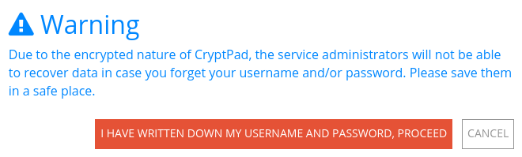

Учетная запись пользователя#
CryptPad шифрует данные, чтобы их могли прочитать только Вы и ваши сотрудники. По этой причине администраторы службы не могут просмотреть, восстановить или сбросить ваш пароль. Поэтому важно, чтобы Вы записали свой пароль в надежном месте отдельно от своей учетной записи CryptPad.
Примечание
Для Вашей идентификации CryptPad использует комбинацию Вашего имени пользователя и пароля. Имена пользователей в CryptPad не уникальны. Можно создать несколько учетных записей с одним и тем же именем пользователя и разными паролями.
Типы учетных записей#
На CryptPad существует три типа учетных записей:
Гость#
Незарегистрированные пользователи идентифицируются по аватару животного или маскота (в правом верхнем углу).
Для использования CryptPad без регистрации не требуется никакой личной информации. Однако функциональность ограничена:
Доступ ко всем приложениям.
Совместное использование и совместная работа над документами.
Срок хранения документов ограничен 3 месяцами бездействия (учитывается для каждого документа).
Хранилище файлов недоступно для изображений/видео/PDF/ и т.д. …
Ограниченный доступ к календарям (только календари с общим доступом по ссылке).
Вошедший в систему пользователь#
Вошедший в систему пользователь идентифицируется по аватару (в правом верхнем углу), либо по фотографии его профиля, если он установил одну из них, либо по первым 2 буквам своего отображаемого имени.
Для регистрации учетной записи не требуется никакой личной информации, только имя пользователя и пароль. Дополнительные функции для зарегистрированных пользователей:
Личное и постоянное место для хранения документов.
Хранилище файлов для изображений/видео/PDF/и т. д.
Дополнительные возможности для управления документами в качестве владельца: добавить пароль, задать срок действия или список доступа.
Организация документов в папки, общие папки, или с помощью тегов и шаблонов.
Создание команд.
Настройка страницы профиля и списка контактов для общего доступа к документам и чата. Уведомления о взаимодействиях между контактами.
Создание календарей и управление ими.
Управление учетными записями#
Регистрация#
Чтобы зарегистрировать новую учетную запись, перейдите на страницу регистрации: Регистрация в правом верхнем углу домашней страницы.

Заполните следующую информацию:
Имя пользователя: это имя, используемое для входа в CryptPad, оно отличается от Отображаемого имени, видимого другими пользователями. Имя пользователя не может быть изменено после создания учетной записи.
Примечание
В отличие от многих онлайн-сервисов, CryptPad не требует адреса электронной почты для регистрации. В качестве имени пользователя можно использовать адрес электронной почты, но затем он используется как любая другая строка символов. Как поясняется ниже, это имя пользователя не отображается администраторам и никогда не используется для связи с Вашей учетной записью (особенно для отправки электронных писем 'о сбросе пароля', поскольку они не существуют на CryptPad).
Пароль: Рекомендуется использовать надежный пароль. Пароль можно изменить в настройках пользователя.

Опасно
Важно: администраторы CryptPad не смогут просмотреть, восстановить или сбросить Ваш пароль, если он утерян или забыт.
Условия обслуживания: прочитайте и примите условия обслуживания.
Необязательно:
Импорт документов из Вашего анонимного сеанса: Если Вы уже создали документы как незарегистрированный пользователь, то сейчас Вы можете импортировать их в свою учётную запись.
Вход в систему#
Чтобы войти в CryptPad, перейдите на страницу Войти (в правом верхнем углу домашней страницы) и введите имя пользователя и пароль, использованные при регистрации.
Необязательно:
Импорт документов из Вашего анонимного сеанса: Если Вы уже создали документы как незарегистрированный пользователь, то сейчас Вы можете импортировать их в свою учётную запись.
Уведомления#
Зарегистрированные пользователи
CryptPad уведомляет Вас, когда Ваши контакты взаимодействуют с Вами. Уведомления отображаются с помощью колокольчика рядом с аватаркой (вверху справа). Если у Вас есть непрочитанные уведомления, колокольчик закрашен и отображается их количество.
Выпадающее меню колокольчика:
Просмотреть непрочитанные уведомления.
Удалить уведомление с помощью .
Открыть панель уведомлений: просмотреть все уведомления и историю уведомлений.
На странице панели уведомлений:
Выберите, уведомления какого типа показать:
Все.
Запросы на Контакт.
Мне предоставлен доступ.
История.
: Удалить уведомления.
Настройки#
Настройки учетной записи находятся в меню пользователя (аватар вверху справа) > Настройки.
Учетная запись#
Имя учётной записи: имя пользователя, выбранное при регистрации. Это имя нельзя изменить. Зарегистрированные пользователи
Открытый ключ подписи: используется администраторами экземпляров и/или в экземплярах, предлагающих подписки. Это единственные данные о Вашем аккаунте, которые доступны администраторам сервиса. Зарегистрированные пользователи
Язык: язык, используемый в интерфейсе CryptPad. Чтобы изменить язык CryptPad, выберите новый язык в раскрывающемся меню. CryptPad переводится на английский и французский языки командой разработчиков, а на другие языки — сообществом. Некоторые переводы могут быть неполными и/или содержать ошибки.
Лимит автоматического скачивания: максимальный размер в мегабайтах (МБ) для автоматической загрузки мультимедийных элементов (изображений, видео, PDF), встроенных в документы. Элементы больше указанного размера можно загрузить вручную. Используйте «-1», чтобы всегда автоматически загружать элементы мультимедиа.
Удаление учётной записи: возможность навсегда удалить свою учётную запись и все её документы. Для этого нужно щёлкнуть по Удалить вашу учётную запись и подтвердить решение. Зарегистрированные пользователи
Профиль#
Отображаемое имя: имя, отображаемое другим пользователям, например, при совместной работе над документами. Чтобы изменить это имя, введите новое имя и нажмите Сохранить.
Аватар: Изображение для Вашего профиля, отображаемое рядом с Вашим отображаемым именем. Зарегистрированные пользователи
Значок: Покажите свою роль другим пользователям, это может быть «Администратор», «Поддержка и модерация» или то, что Вы являетесь платным подписчиком. Зарегистрированные пользователи
Ссылка на Ваш веб-сайт: Введите действительный URL-адрес, чтобы добавить ссылку на Ваш личный веб-сайт. Зарегистрированные пользователи
Описание профиля: Текстовая область, где Вы можете написать небольшую биографию, используя форматирование текста с помощью панели инструментов или с помощью синтаксиса Markdown. Зарегистрированные пользователи
Безопасность и Конфиденциальность#
Закрытие удаленных сеансов: выйти из всех сеансов (сессий), кроме того, в котором Вы задействовали этот пункт меню. (см. также Удаленное отключение) Зарегистрированные пользователи
Двухфакторная аутентификация (2FA): Защитите свою учётную запись с помощью дополнительного кода подтверждения, предоставленного выбранным Вами приложением для аутентификации. Зарегистрированные пользователи
Чтобы активировать 2FA:
Введите пароль Вашей учетной записи
Сохраните код восстановления
Отсканируйте QR-код выбранным Вами приложением 2FA (или скопируйте адрес и вставьте его в свое приложение)
Введите проверочный код для подтверждения
Измените пароль: Измените пароль Вашей учётной записи. Введите свой текущий пароль и подтвердите новый пароль, введя тот дважды
Безопасные ссылки: когда этот параметр активен, ссылка в адресной строке Вашего браузера не даёт доступ к документу, если только получатель уже не имеет его в своем CryptDrive. Этот параметр активен по умолчанию. Настоятельно рекомендуется оставить его активным и использовать меню Поделиться для копирования ссылок на документы.
Опасно
CryptPad включает в ссылки на Ваши документы ключи для их расшифровки. Любой, у кого есть доступ к Вашей истории просмотров, потенциально может прочитать Ваши данные. Это включает в себя навязчивые расширения браузера и браузеры, которые синхронизируют Вашу историю на разных устройствах. Ситуации, когда Ваш браузер виден другим, например при совместном использовании экрана или снимках экрана, также потенциально опасны с точки зрения утечки доступа к Вашим документам. Включение «безопасных ссылок» предотвращает попадание ключей в историю посещенных страниц или их отображение в адресной строке, когда это возможно.
Телеметрия: CryptPad может отправлять анонимную статистику об использовании на сервер, чтобы улучшить взаимодействие с пользователем. Содержание документов никогда не передается. Эта опция отключена по умолчанию.
Кэш: CryptPad сохраняет части Ваших документов в памяти Вашего браузера, чтобы сэкономить использование сети и сократить время загрузки. Вы можете отключить кэш, если на Вашем устройстве недостаточно свободного места. По соображениям безопасности кэш всегда очищается при выходе из учётной записи CryptPad, но Вы можете очистить его вручную, если хотите освободить место на своем компьютере.
Уничтожить все принадлежащие Вам документы: все документы, единственным владельцем которых являетесь Вы, будут безвозвратно уничтожены
Внешний вид#
Цветовая тема: определяет тему (светлую или темную), используемую в CryptPad. По умолчанию это соответствует настройкам операционной системы и/или браузера, но её также можно установить вручную.
CryptDrive#
Перенаправление домашней страницы: автоматическое перенаправление с домашней страницы на Диск при входе в систему больше не включено по умолчанию
Подсказки: справочные сообщения в интерфейсе CryptPad. Нажмите Сбросить, чтобы снова отобразить их, если они были скрыты.
Сохранение документов в CryptDrive: Определяет, сохранять ли автоматически в Вашем CryptDrive документы, которые Вы посещаете. Если никто не владеет документом, который Вы добавляете в свой CryptDrive, то его размер учитывается в Вашей квоте хранилища.
Автоматически: Все документы, которые Вы посещаете, сохраняются в вашем CryptDrive.
Вручную (всегда спрашивать): Если Вы ещё не сохранили документ, то Вас спросят, хотите ли Вы сохранить его в CryptDrive.
Вручную (никогда не спрашивать) Документы не сохраняются автоматически в Вашем Cryptpad. Возможность их сохранения будет скрыта.
Дубликаты собственных документов: Когда Вы помещаете свои документы в общую папку, копия сохраняется в Вашем CryptDrive, чтобы гарантировать, что Вы всё ещё имеете контроль над ними. Вы можете скрыть продублированные файлы. Будет отображена только публичная (общая) версия документа (если она не удалена), иначе будет отображена оригинальная версия и место, где она была сохранена последний раз.
Миниатюры: чтобы упростить навигацию по CryptDrive в режиме сетки, CryptPad может создавать миниатюры документов и сохранять их в браузере. Эта опция отключена по умолчанию, поскольку она может замедлять работу браузера на менее мощных компьютерах. Кнопка Очистить удаляет все существующие миниатюры.
Резервное копирование: доступны два типа резервных копий.
Скачать копию ключей сохраняет в CryptDrive только ключи документов, но не их содержимое. Эта опция предназначена для сохранения доступа к документам и восстановления его в другом сеансе.
Скачать мой CryptDrive сохраняет содержимое всех документов из CryptDrive. Когда это возможно, это делается в формате, читаемом другим программным обеспечением. Некоторые приложения создают файлы, которые доступны для чтения только CryptPad.
Импорт: Если Вы создали какие-то документы как незарегистрированный пользователь (до авторизации в Cryptpad), их можно импортировать в Ваш CryptDrive. Зарегистрированные пользователи
Удалить историю: историю CryptDrive и уведомлений можно удалить, чтобы сэкономить место на диске. Это не влияет на историю документов, которую можно удалить по отдельности в диалоговом окне properties.
Курсор#
Цвет курсора: измените цвет курсора. Это используется для идентификации Вас при совместной работе над документами. Он также определяет цвет Вашего текста, когда цвет по автору активен в документах Code.
Показывать позицию моего курсора: Отобразите или скройте точное положение вашего курсора для других пользователей.
Отображать положение курсора других пользователей (БЕТА): отображать или скрывать положение курсоров других пользователей.
Документ#
Пользовательские настройки для приложения Документ.
Максимальная ширина редактора: переключение между режимом страницы (по умолчанию), который ограничивает ширину текстового редактора, и использованием полной ширины экрана.
Проверка орфографии: включите проверку орфографии в документах с форматированным текстом. Орфографические ошибки подчеркнуты, а предлагаемые исправления доступны через Ctrl`+ ``Щелчок правой кнопкой мыши` по слову, которое нужно исправить.
Уведомления о комментариях: отключите уведомления о том, что другой пользователь ответил на один из Ваших комментариев.
Открывать ссылки при первом клике. Открывать встроенные ссылки при клике без всплывающего окна предварительного просмотра.
Код#
Пользовательские настройки для приложения Код / Markdown.
Отступ в редакторе кода (пробелы): выберите количество пробелов для каждого уровня отступа.
Отступ с использованием табуляции (вместо пробелов): вставляйте табуляции вместо пробелов с помощью клавиши Tab.
Автоматическое закрытие квадратных скобок: автоматически вставлять закрывающий символ
), когда скобки открываются с помощью((также работает с[,',').Размер шрифта в редакторе кода: установите размер текста в редакторе кода.
Проверка орфографии: подчеркивать орфографические ошибки в редакторе кода, предложения по исправлению доступны, если
щелкнуть правой кнопкой мышипо слову, которое нужно исправить.
Канбан#
Пользовательские настройки для приложения Канбан.
Фильтр тегов. Как Вы хотите, чтобы фильтр тегов действовал при выборе нескольких тегов: показывать только карточки, содержащие все выбранные теги (И), или показывать карты, содержащие любой из выбранных тегов (ИЛИ).
Уведомления#
Пользовательские настройки уведомлений.
Уведомления календаря: включение/отключение всех уведомлений о предстоящих событиях календаря.
Подписка#
(только на cryptpad.fr)
Перенаправляет на страницу аккаунта.